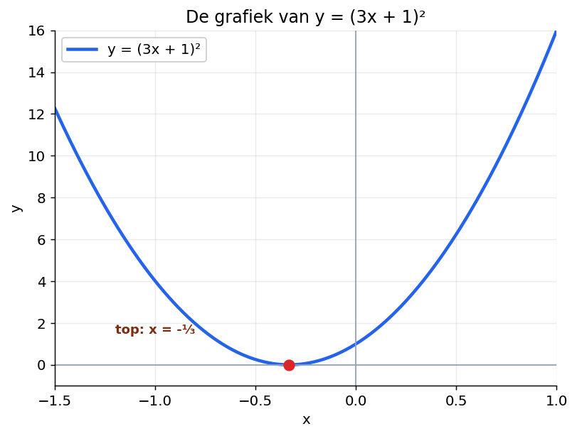
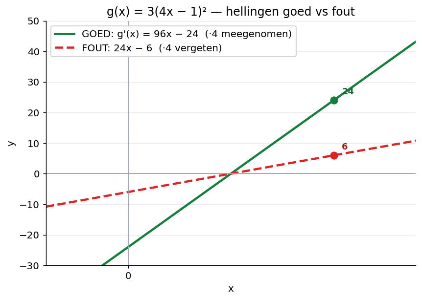
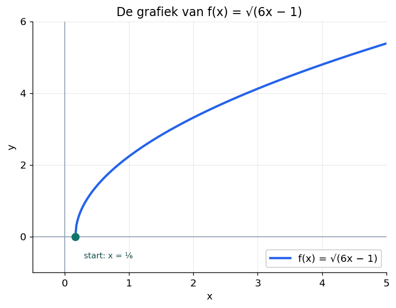
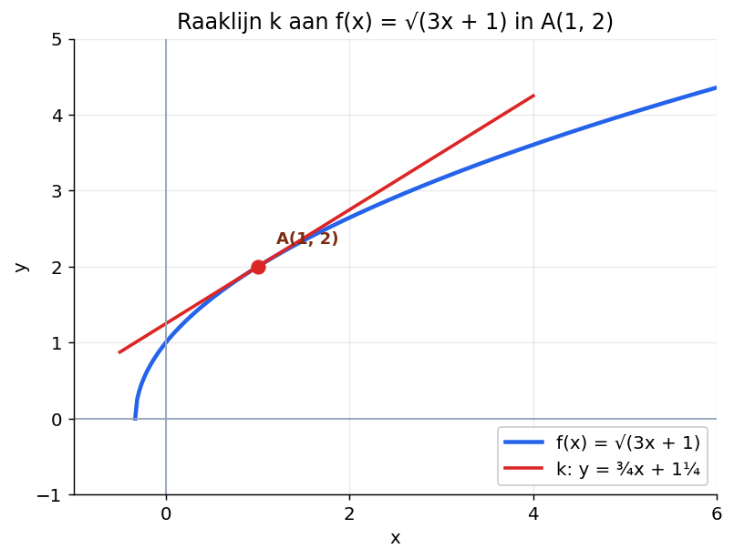

Differentiëren met haakjes en wortels — stap voor stap
Wat ga je leren?
De afgeleide van f(x) = c·(ax+b)n berekenen voor n geheel
Dezelfde regel toepassen voor n als breuk (wortels)
De binnenste afgeleide ·a niet vergeten
De kettingregel gebruiken in toetsstijl-opgaven met raaklijnen en extreme waarden
Hoi Kasper — klaar om te beginnen?
Klik op de knop hieronder en je tutor begeleidt je stap voor stap door deze paragraaf. Werk in je eigen tempo. Een fout antwoord is geen probleem — daar leer je juist van.
1. Hoe differentieer je (3x + 1)²?
Bekijk de functie:
y = (3x + 1)²
Je kunt deze op twee manieren differentiëren. Probeer eerst de manier die je al kent.

Figuur 1. De grafiek van y = (3x + 1)².
AANPAK 1 — haakjes uitwerken
Werk eerst de haakjes weg, dan term voor term differentiëren.
Eerst uitwerken:
(3x + 1)² = 9x² + 6x + 1
Dan term voor term:
y' = 18x + 6
Dat lukt hier, omdat de macht 2 is. Maar wat als de macht 7 is — (3x + 1)7? Dan wordt uitwerken een ramp.
Daarom is er een snellere manier: de kettingregel.
AANPAK 2 — kettingregel
Differentieer in drie stukken:
Stap 1. Macht naar voren halen (machtsregel toepassen op de hele haak):
y' = 2 · (3x + 1)1 · ...
Stap 2. De inhoud van de haak overschrijven, met één lager exponent:
y' = 2 · (3x + 1) · ...
Stap 3. Vermenigvuldigen met de afgeleide van wat in de haak staat. De afgeleide van 3x + 1 is gewoon 3:
y' = 2 · (3x + 1) · 3
Even netjes opschrijven:
y' = 6(3x + 1) = 18x + 6
Zelfde antwoord. Beide aanpakken kloppen.
De ·3 aan het eind is wat we de binnenste afgeleide noemen. Dat is de afgeleide van wat er in de haak staat.
LET OP
Als je de binnenste afgeleide vergeet, klopt je antwoord niet. Dat is de fout waar leerlingen het vaakst op zakken.
2. De kettingregel voor n geheel
De regel die je net hebt ontdekt geldt voor elke gehele macht n.
REGEL — kettingregel (n geheel)
Voor f(x) = c · (ax + b)n geldt:
f'(x) = c · n · (ax + b)n−1 · a
De factor ·a aan het eind is de binnenste afgeleide.
Werkschema — kettingregel
Macht naar voren halen (n vóór).
Haakje overschrijven, exponent één lager.
Vermenigvuldigen met de binnenste afgeleide (de afgeleide van wat in de haak staat).
Waar gaat het mis?
Bekijk g(x) = 3(4x − 1)². Hieronder zie je twee uitwerkingen — eentje klopt, eentje niet.

Figuur 2. Twee mogelijke antwoorden voor g'(x). Alleen de groene lijn klopt.
GOED — ·4 meegenomen
g'(x) = 3 · 2 · (4x − 1) · 4
g'(x) = 24(4x − 1)
g'(x) = 96x − 24
FOUT — ·4 vergeten
g'(x) = 3 · 2 · (4x − 1)
g'(x) = 6(4x − 1)
g'(x) = 24x − 6
Controleren door haakjes uit te werken:
g(x) = 3(16x² − 8x + 1) = 48x² − 24x + 3
g'(x) = 96x − 24 ✓
Het goede antwoord klopt met de uitgewerkte versie. Het foute antwoord klopt niet. Conclusie: de ·a mag je nooit vergeten.
VOORBEELD
Differentieer f(x) = x² − (3x − 1)⁴.
De eerste term gewoon met de machtsregel:
(x²)' = 2x
De tweede term met de kettingregel. Hier is c = −1, n = 4, a = 3.
(−(3x − 1)⁴)' = −1 · 4 · (3x − 1)³ · 3
= −12(3x − 1)³
Samen:
f'(x) = 2x − 12(3x − 1)³
VOORBEELD
Differentieer g(x) = 4x + 10/(2x − 1).
Eerst herschrijven met een negatieve exponent zodat je de regel kunt gebruiken:
g(x) = 4x + 10(2x − 1)−1
Term voor term. De eerste term:
(4x)' = 4
Tweede term met de kettingregel. Hier is c = 10, n = −1, a = 2.
(10(2x − 1)−1)' = 10 · (−1) · (2x − 1)−2 · 2
= −20(2x − 1)−2
= −20 / (2x − 1)²
Samen:
g'(x) = 4 − 20 / (2x − 1)²
Probeer zelf — kettingregel met gehele machten
Vergeet de binnenste afgeleide niet.
Stappenplan
c = 1, n = 3, a = 4
Macht naar voren: 3 · (4x + 3)²
Binnenste afgeleide: 3 · (4x + 3)² · 4
f'(x) = 12(4x + 3)²
Stappenplan
c = 1, n = 7, a = 5
Macht naar voren: 7 · (5x − 2)⁶
Binnenste afgeleide: 7 · (5x − 2)⁶ · 5
g'(x) = 35(5x − 2)⁶
Stappenplan
c = 6, n = 5, a = ½
Macht naar voren: 6 · 5 · (½x − 4)⁴ = 30(½x − 4)⁴
Binnenste afgeleide: 30(½x − 4)⁴ · ½
h'(x) = 15(½x − 4)⁴
CHECK
Heb je bij elk antwoord de ·a meegenomen? Bij q1: ·4. Bij q2: ·5. Bij q3: ·½. Zonder die factor klopt het niet.
3. De kettingregel voor wortels
De kettingregel werkt ook als n een breuk is. Dat heb je nodig bij wortels.
Trucje: schrijf de wortel als een macht.
√(ax + b) = (ax + b)½
Dan kun je gewoon de regel toepassen.
REGEL — kettingregel (n in ℝ)
Voor f(x) = c · (ax + b)n geldt:
f'(x) = c · n · (ax + b)n−1 · a
voor elke n in ℝ — geheel, breuk of negatief.

Figuur 3. De grafiek van f(x) = √(6x − 1). Domein: x ≥ ⅙.
VOORBEELD
Differentieer f(x) = √(6x − 1).
Stap 1. Herschrijf als macht:
f(x) = (6x − 1)½
Stap 2. Pas de regel toe. Hier is c = 1, n = ½, a = 6.
f'(x) = ½ · (6x − 1)−½ · 6
Stap 3. Vereenvoudig. ½ · 6 = 3, en (...)−½ = 1/√(...).
f'(x) = 3 · (6x − 1)−½
f'(x) = 3 / √(6x − 1)
VOORBEELD
Differentieer g(x) = x² − √(6x − 1).
Term voor term. Eerste term:
(x²)' = 2x
Tweede term, kettingregel met c = −1, n = ½, a = 6:
(−(6x − 1)½)' = −½ · (6x − 1)−½ · 6
= −3 / √(6x − 1)
Samen:
g'(x) = 2x − 3 / √(6x − 1)
Probeer zelf — kettingregel met wortels
Schrijf de wortel eerst om naar een macht, en pas dan de regel toe.
Stappenplan
Herschrijf: f(x) = (2x + 1)½
c = 1, n = ½, a = 2
f'(x) = ½ · (2x + 1)−½ · 2
½ · 2 = 1
f'(x) = 1 / √(2x + 1)
Stappenplan
c = 1, n = ½, a = 2
g'(x) = ½ · (2x − 5)−½ · 2
½ · 2 = 1
g'(x) = 1 / √(2x − 5)
Stappenplan
Herschrijf: h(x) = 6 · (2x − 5)−½
c = 6, n = −½, a = 2
h'(x) = 6 · (−½) · (2x − 5)−3/2 · 2
6 · (−½) · 2 = −6
h'(x) = −6 · (2x − 5)−3/2 = −6 / (2x − 5)3/2
Of: h'(x) = −6 / ((2x − 5) · √(2x − 5))
4. Informatief — de algemene kettingregel
Een functie als f(x) = (3x + 1)² is een samengestelde functie. Eerst doe je 3x + 1, daarna kwadrateren.
Algemener:
f(x) = g(h(x))
Hier is g de buitenste functie en h de binnenste. Bijvoorbeeld bij (3x + 1)²: g(u) = u², h(x) = 3x + 1.
REGEL — algemene kettingregel
Voor een samengestelde functie f(x) = g(h(x)) geldt:
f'(x) = g'(h(x)) · h'(x)
"Afgeleide buitenste maal afgeleide binnenste."
Bij f(x) = c · (ax + b)n is h(x) = ax + b, dus h'(x) = a. Dat is dezelfde ·a als hiervoor.
Maar nu kun je ook iets ingewikkelders aanpakken, zoals √(x² + 4). Daar is de binnenste functie x² + 4, dus de binnenste afgeleide is 2x.
c4) k: y = 2x + b. Door A(4, 2): 2 = 8 + b, dus b = −6. k: y = 2x − 6. Snijpunt x-as: 0 = 2x − 6, x = 3. Dus xB = 3.
Opgave B — kettingregel + extreme waarden
Gegeven:
f(x) = (½x − 3)³ − 1½x + 10
Stappenplan
a) Eerste term met de kettingregel: ((½x − 3)³)' = 3(½x − 3)² · ½ = 1½(½x − 3)². Tweede term: (−1½x)' = −1½. De +10 valt weg. Dus f'(x) = 1½(½x − 3)² − 1½.
b) f'(x) = 0 geeft 1½(½x − 3)² = 1½, dus (½x − 3)² = 1. Dat geeft ½x − 3 = 1 ∨ ½x − 3 = −1.
c1) ½x − 3 = 1 → x = 8. ½x − 3 = −1 → x = 4. Dus x1 = 4, x2 = 8.
c2) f(4) = (−1)³ − 6 + 10 = −1 + 4 = 3.
c3) f(8) = 1³ − 12 + 10 = 1 − 2 = −1.
Antwoord: max f(4) = 3 en min f(8) = −1.
Opgave C — kettingregel + raaklijn aan wortel (synthese)
Gegeven:
f(x) = √(3x + 1)
De lijn k raakt de grafiek van f in punt A met xA = 1.

Figuur 5. Raaklijn k aan f(x) = √(3x + 1) in A(1, 2).
Stappenplan
a) yA = f(1) = √(3 + 1) = √4 = 2. Dus A(1, 2).
b1) f(x) = (3x + 1)½. Kettingregel met c = 1, n = ½, a = 3: f'(x) = ½ · (3x + 1)−½ · 3 = 3 / (2√(3x + 1)).
b2) f'(1) = 3 / (2 · √4) = 3 / (2 · 2) = ¾.
c) k: y = ¾x + b. Door A(1, 2): 2 = ¾ + b, dus b = 1¼. k: y = ¾x + 1¼.
Vastgelopen op een opgave?
Klik op de tutor-knop rechtsonder. Vertel welke opgave en deelvraag, en bij welke stap je vastloopt.